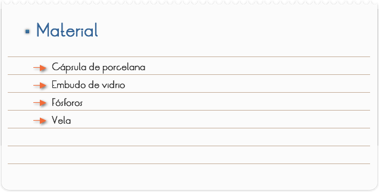
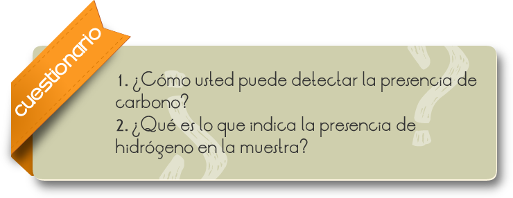
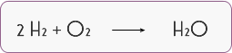

Introducción
Los compuestos orgánicos son sustancias químicas basadas en cadenas de carbono e hidrógeno. En muchos casos contienen oxígeno, y también nitrógeno, azufre, fósforo, boro y halógenos. No son moléculas orgánicas los carburos, los carbonatos y los óxidos de carbono.
Las moléculas orgánicas pueden ser de dos tipos:
Moléculas orgánicas naturales: Son las sintetizadas por los seres vivos, y se llaman biomoléculas, las cuales son estudiadas por la bioquímica.
Moléculas orgánicas artificiales: Son sustancias que no existen en la naturaleza y han sido fabricadas por el hombre como los plásticos.
Objetivo
Identificar la presencia de carbono y de hidrógeno en una muestra, a través de procesos simples.

1. Encender una vela y colocar sobre la llama una cápsula de porcelana, observar y anotar.
2. Encender una vela y colocar un embudo de vidrio invertido, a una cierta distancia de la llama, observar y anotar.

RESULTADOS Y CONCLUSIONES
Los compuestos orgánicos queman con mayor o menor facilidad y, analizando la llama resultante de la combustión, podemos deducir las siguientes conclusiones al respecto del experimento realizado.
Parte 1
Ocurre formación de tizne (mancha oscura) en la cápsula de porcelana, indicando la presencia de carbono en el material que constituye la vela.
Parte 2
Ocurre la aparición de gotitas de agua en el cuello del embudo, indicando la presencia del hidrógeno en el material que constituye la vela.
